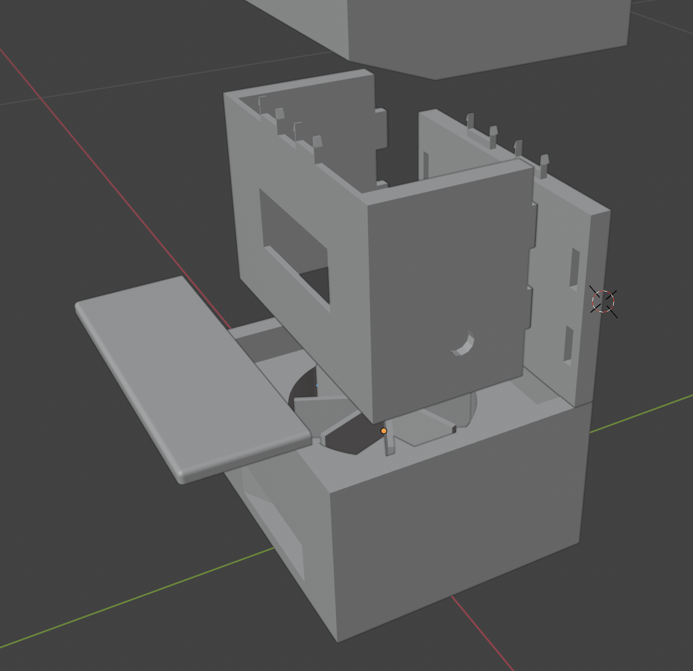
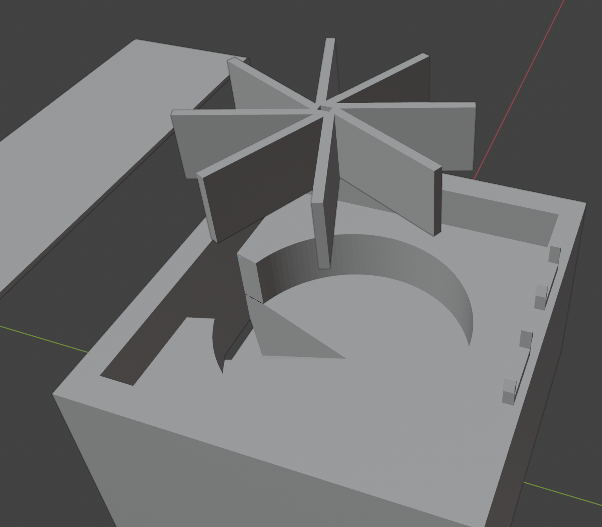
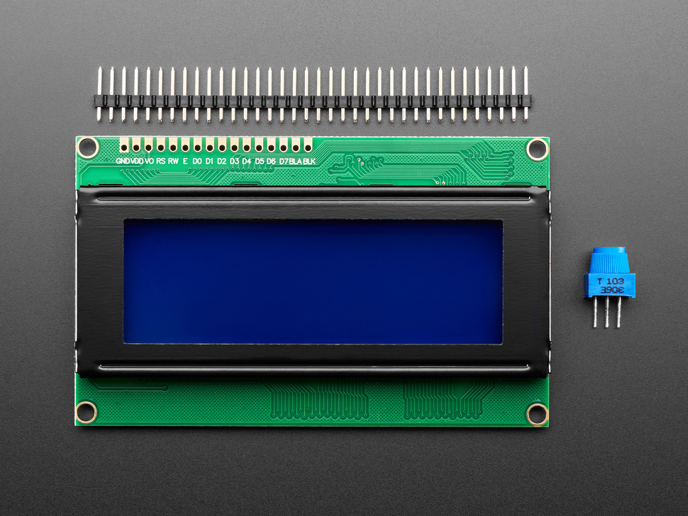
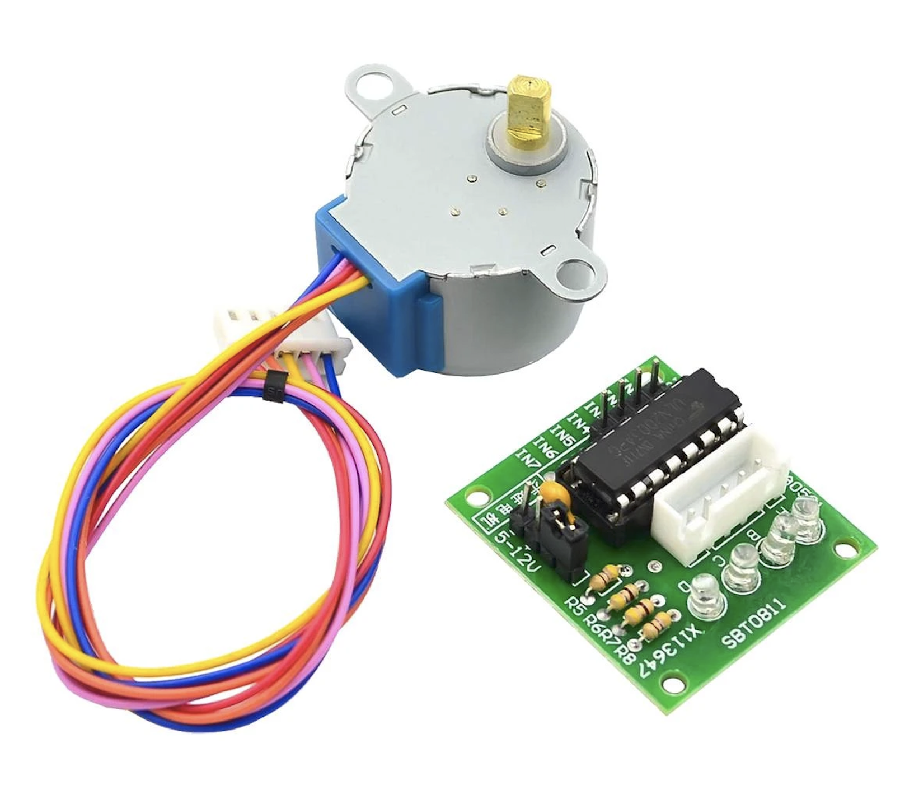
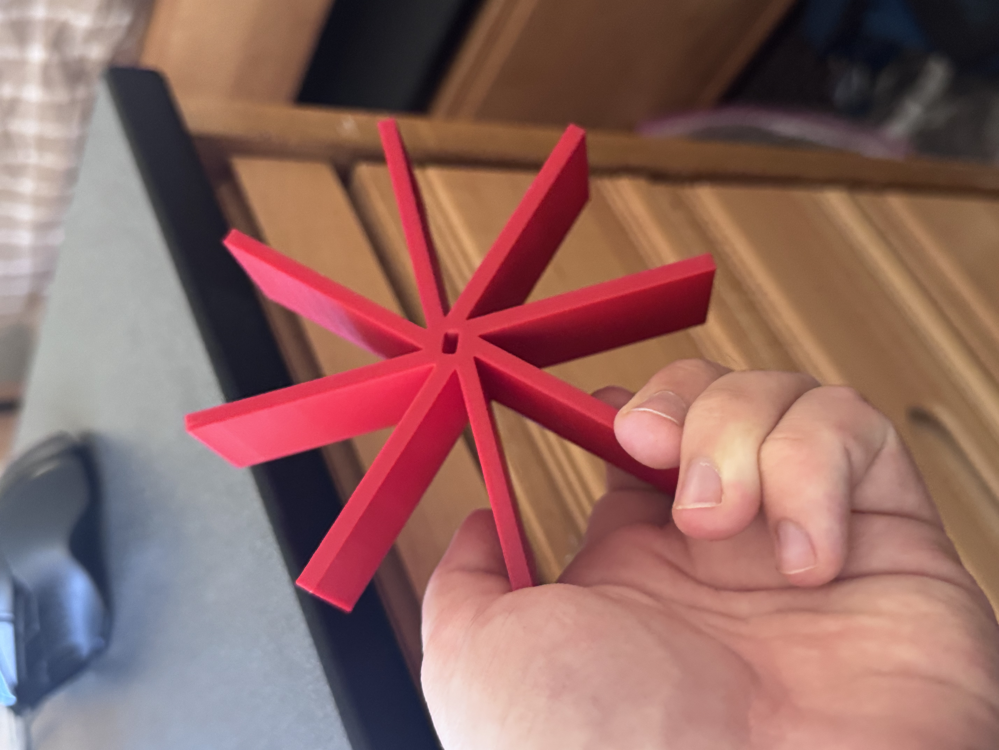
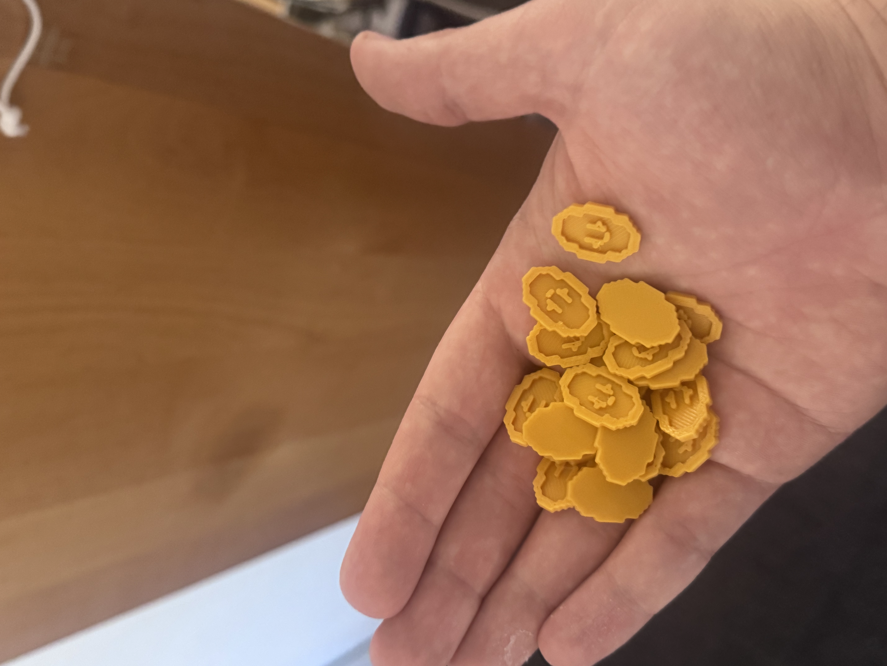
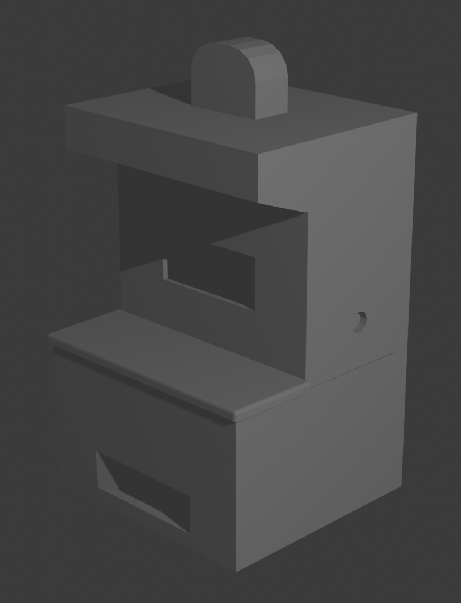

Isaac's Slot Machine
Final Project for the MAT111PC Course / Ongoing Personal Project to make a fully-functioning toy
Conception

MAT111: Physical Computing was a course offered as part of the Media Arts & Design minor at UCSB. During the course, we learned how to build circuits with Arduino, and encouraged to build essentially anything with Input and Output for the final project. Being hyperfixated on the Binding of Isaac videogame at the time, I thought it might be fun to make something inspired by it. Not just something that would work, but something that I could hold on to myself after the class and enjoy as a novelty.
Modeling


Most of the time I put into this project was spent within Blender, a 3D Modeling and Animation software, in which I carefully modeled most of the parts of the machine in scale with my Arduino, its components, and each other. I also created Tokens based on the Coins you find throughout the Binding of Isaac which would be dispensed by the machine.
Gathering Supplies


Many of the components used in the project either were given by my instructor for free, or purchased at my campus' Machine Shop. I also purchased a 20x4 LCD online which would serve as the machine's primary mechanism for user feedback. I additionally purchased around $80 worth of Acryllic paint and other painting supplies to give life to the machine and any other future projects.
Circuit Building & Programming

This was the most challenging part of the assignment for me. While I had worked with various components for previous assignments, I had never touched an LCD or Stepper Motor, and as it turns out using both at once with an Arduino Nano and a singular power supply is near impossible! My schematic uses every Digital pin on the Arduino, and with the single 9V battery I was using at the time I could barely get the motor to turn and the LCD to glow simultaneously.
My problem solving skills were put to the test as any issues with the project could be the result of either bugs in the code, faulty wiring, or even the components themselves failing. Of the three areas, the first was the most manageable, especially since I had worked in Javascript in MAT111WN: Web Narratives. Dealing with the other two areas, as a result, was a great learning experience, despite being frustrating!
Presentation & Revision


When the deadline for my class' Final Project passed, all I had to show was a switch, an LCD screen, and a bunch of wires connected to a Circuit Board. Clear I/O and knowledge demonstrated, so I passed, however I was unsatisfied with my work.


I was only able to print out two parts, a wheel attachment for a Motor, and the Coin Tokens; the others as it turned out were too big for my school's 3D printers... Well, too big initially, as I was able to go back into Blender after the fact and shrink down the parts significantly while still accommodating the components.
Finally, that darned power situation. There are ways of powering an LCD and Motor at once, of course, I just lacked the parts. But the method of doing so is currently unknown to me, as while I could easily wire multiple batteries I would like to have one singular power supply for easy replacement/charging.

Wait a minute, did I just leave you on a cliffhanger? Indeed, this project is still ongoing, as I plan to redo the schematic and finally print and paint every machine part I need. As for the when, well, just you wait and see what I cook up... it shouldn't take too long...